Operating Documentation
Direction 5500113, Rev# 3
Discovery MR450 1.5T Service Methods
Module Version 7.0, Version Date 9/16/10
Operating Documentation |
| Required Persons | Preliminary Reqs | Procedure | Finalization |
|---|---|---|---|
| 2 | Included in Procedure | 10 hours (excluding field stability check) | Included in Procedure |
Shimming is the process of measuring the magnet's field over a fixed volume and then calculating and installing active (superconducting) and passive (steel) shims to improve field homogeneity. The factory shimming results for LCC300 magnets are in the Acceptance Test Report (ATR) shipped with the magnet. On-site shimming is performed to compensate for unequal distribution of room steel that is affecting field homogeneity. Additional shimming may be required following any significant environmental changes near the magnet. It is important to perform shimming after the magnet is sited and ramped and the magnetic field stabilized.
| NOTE: |
|
| NOTE: | Always use the most recent revision of GE ShimTool Software CD, 5102783. The LCC300 Shimming procedure stated here includes shimming of WB Series LCC300 magnets, which requires 5102783 Revision 6, minimum. |
Illustration 1: Pre-Shimming Flowchart

| Procedures Referenced | |
|---|---|
| Liquid Helium Fill | Preparations for Shimming, Preparations for Shimming |
| Preparations for Field Measurement | Re-establishing ATR SC Shim Currents, Re-establishing ATR SC Shim Currents |
| Field Map Acquisition, Field Map Acquisition | |
Illustration 2: Shimming Flowchart

| Procedures Referenced | |
|---|---|
| Running ShimTool, Running ShimTool | Field Adjustment after Shimming |
| Passive Shimming, Passive Shimming | Field Stability Check |
| Superconducting Shimming, Superconducting Shimming | |
| Finalization, Step 1 | |
| Item | Qty | Effectivity | Part# | Manufacturer | |
|---|---|---|---|---|---|
| 3.0T Warning Sign & Label Kit | 1 | - | 2379494 | - | |
| Portable Oxygen Monitor | 1 kit per person | - | 2287000 | - | |
| Cryogen Safety Wear Kit | 1 set per person | - | 46-271137G1 | - | |
| Nonabsorbent protective clothing (long sleeve shirt and pants) | 1 pair per person | - | - | - | |
| Nonferrous Safety Shoes | 1 | - | - | - | |
| Brass Master Padlock with Brass Shackle | 1 | - | 46-194427P320 | - | |
| Brass Master Transition Padlock | 1 pkg. of 25 | - | 2387081 | - | |
| Black & White on Red Lockout Tag | 1 | - | 46-194427P322 | - | |
| Transition LOTO Tag | 1 | - | 46-194427P313 | - | |
| Line Cord Plug Cover, Plugs ≤3 in. wide x ≤ 5.875 in. long (76 mm x 149 mm), Cords ≤1.25 in. (31 mm) diameter | 1 | - | 46-194427P321 | - | |
| Shim Power Supply | 1 | - | 46-260777G3 | - | |
| 750 Amp Ramp Cable Kit 2135435 or 1000 Amp Ramp Cable Kit with Ground 2353394 | 1 | - | 2135435 or 2353394 | - | |
| Shim Cable Kit (if not already ordered with the magnet) | 1 | - | 2135558 | - | |
| MetroLab Teslameter Kit | 1 | - | 46-251865G4 | - | |
| No. 5 MetroLab Probe (included in MetroLab Teslameter Kit 46-251865G4) | 1 | - | 46-255839P104 | - | |
| No. 6 MetroLab Probe (included in MetroLab Teslameter Kit 46-251865G4) | 1 | - | 2295525-5 | - | |
| LCC300 Shim Camera Kit | 1 | - | 2386028 | - | |
| GE ShimTool Software CD, 5102783 (included in LCC300 Shim Camera Kit, 2386028). NOTE: Use the most recent revision. Shimming WB Series LCC300 magnets requires Revision 6, minimum. | 1 | - | 5102783 | - | |
| LCC300 Passive Shimming Kit (includes LCC300 Field Mapping Fixture 2380758) | 1 | - | 2386029 | - | |
| LCC300 Field Passive Shim Kit | 1 | - | 2385710 | - | |
| LCC300 Passive Shimming Pull Assist Kit | 1 | - | 5104145 | - | |
| Titanium Tool Kit, Basic Set 5113258, Titanium Tool Kit, Installation Set 5112581 or other non-ferromagnetic tools (magnets with magnetic fields >1.5T) | 1 | - | 5113258 or 5112581 | - | |
| HDx Service Platform: Can use Universal Service Ladder/Platform 2319156 if service space ≥30 inches (762 mm) | 1 | - | 5155291 (or 2319156) | - | |
| Service Methods documentation for the magnet/enclosures (available through the Common Document Library at www.gehealthcare.com or through your local GE Healthcare Service Representative) | 1 | - | - | - | |
| Item | Qty | Effectivity | Part# | Manufacturer |
|---|---|---|---|---|
| Optional field-supplied item: 10 mil thick flexible plastic sheets (x-ray film, Mylar or equivalent), 10 in. x 14 in. (250 mm x 350 mm), minimum. Must be free of sharp edges and bent corners. | 1 | - | - | - |
| ||||
| Potential Fatal Injury! | ||||
| Make sure to review and fully understand all superconducting magnet portions of MR Magnet - Safety Requirements before shimming the magnet. |
| ||||
| Potential Fatal Injury! | ||||
| Make sure to fully comply with all required items for Shimming in the 'Magnet & Cryogen Service Safety Requirements' subsection of MR Magnet - Safety Requirements before and while shimming the magnet. |
| ||||
| Potential Fatal Injury! | ||||
| Have all Work Assistants or Work Observers comply with the 'Buddy System Requirements & Certification' subsection of MR Magnet - Safety Requirements before shimming the magnet. |
| ||||
| Asphyxiation Hazard! | ||||
| The Shimming Procedure generates odorless, colorless helium gas that displaces oxygen in the air. | ||||
| Make sure magnet room vent exhaust fan is on before shimming the magnet. |
| ||||
| Electrical Shock Hazard | ||||
| Contact with connectors leading to an energized power supply can cause electrical shock. | ||||
| Follow lockout/tagout procedures while making electrical connections to a main power supply or a shim power supply. (See OSHA Lockout-Tagout.) |
| ||||
| Verify that Magnet Monitor is on and operational. If using proprietary Magnet Monitor software, verify that Magnet Monitor Pressure Control is enabled and operational. | ||||
| ||||
| Moving articles or equipment in the Magnet Room may affect field
readings. Do not move articles or equipment in the Magnet Room while adjusting shim currents. | ||||
| ||||
| ONLY use nonmagnetic tools when working in the Magnet Room. | ||||
| Condition | Reference | Effectivity |
|---|---|---|
Make sure the area is secure and that all required Warning Signs are posted to meet the safety requirements stated in the following document before starting the Shimming procedure. | - | |
The removal of some magnet enclosure components may be required to complete the Shimming procedure. Refer to the appropriate document below and the appropriate Service Methods documentation (available through the Common Document Library at www.gehealthcare.com or your local GE Healthcare Service Representative) before continuing with the Shimming procedure if cover removal is required. | - | |
(continued) | - | |
Verify that the magnet helium level is ≥80%. Fill the magnet in conformance with the document below to make sure the helium level is at this level before shimming. | - | |
Verify that the magnet's magnetic field drift rate is <0.1 ppm/hr. and that the Magnet Monitor is on and operational. If using proprietary Magnet Monitor software, verify that the Magnet Monitor Pressure Control is enabled and operational. Verify that the magnet pressure is steady at 3.9 to 4.1 psig, both conditions in conformance with Field Stability Check, Field Stability Check subsection below before starting Running ShimTool, Running ShimTool. | - | |
Make sure to reestablish the SC Shim Currents stated in the magnet's Acceptance Test Report (ATR) in conformance with Re-establishing ATR SC Shim Currents, Reestablishing ATR SC Shim Currents, before starting Running ShimTool, Running ShimTool. | - | |
Make sure the magnet room exhaust fan is on and operational before starting the Shimming procedure. | - | - |
Make sure the magnet room door is propped open before starting the Shimming procedure. | - | - |
| NOTE: | Preparations for Shimming, Preparations for Shimming, must be completed before shimming the magnet. |
Prepare for field mapping in conformance with Preparations for Field Measurement before shimming if not already done.
Allow the magnet to stabilize to <0.1 ppm/hr. main field drift before shimming. This will take 12 hours. Other commissioning functions can be performed during this time.
Verify that the magnet helium level is ≥80%. Fill the magnet in conformance with Liquid Helium Fill to make sure the helium level is ≥80% before continuing.
Verify that the Shim Lead Pigtail Cable (2135362) is connected to P1-A on the Shim Lead Assembly in conformance with the Superconducting Shim Coil Power Supply Connections to Magnet subsection of Connections for Ramping and Shimming. (See the illustration below.)
Illustration 3: Shim Power Supply Connections to P1-A
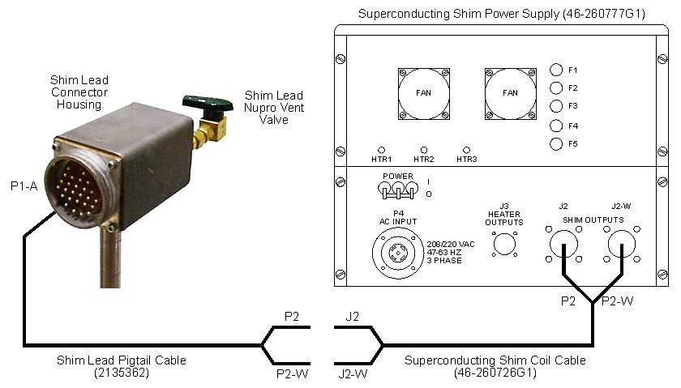
Make sure the Shim Lead Assembly is engaged in conformance with Shim Lead Engagement and Disengagement.
Open the NuPro Shim Lead Vent Valve to increase the Shim Leads' ability to carrying current.
| ||||
| Do not connect input power to the Superconducting Shim Coil
Power Supply until it is verified that ALL current controls are set
to zero (turned fully counterclockwise, CCW) and the supply is turned
off. Connecting the Superconducting Shim Coil Harness to the magnet when the Superconducting Shim Coil Power Supply is turned on may cause irreparable damage to the vapor-cooled shim leads. | ||||
| ||||
| Equipment damage is possible if heater currents are not set correctly. | ||||
Remove LOTO and connect input power to the Superconducting Shim Coil Power Supply. Make sure the Heater Currents are: T1 = 610 mA ±5 mA, T2 = 610 mA ±5 mA and Axial = 710 mA ±10 mA. (See Section 4 of the vendor's service manual for details.)
| NOTE: | Always check the ATR for any possible magnet-specific current settings. |
After sufficient cooling of the Shim Lead Assembly, verify that all six shim power supply channels operate at both positive and negative 250 mA polarities for the Axial, Transverse 1 and Transverse 2 shim groups. (See the illustration below.)
Illustration 4: Shim Power Supply Controls (Front Panel)
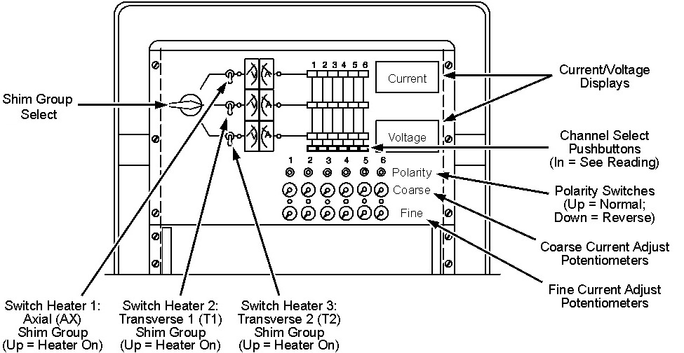
| ||||
| Electrical Shock Hazard | ||||
| Contact with connectors leading to an energized power supply can cause electrical shock. | ||||
| Follow lockout/tagout procedures while making electrical connections to the shim power supply. |
Disconnect and LOTO the input power to the Shim Coil Power Supply. Verify that no voltage is present by using a DVM or equivalent measuring device.
Verify that connectors P2 and P2W on Superconducting Shim Coil Cable 46-260726G1 (Run 603) are connected to the J2 and J2-W Shim Output connectors on the back of the Power Supply Cabinet, MS7-A1. (See Illustration 3.)
Verify that connectors J2 and J2-W on the other end of Superconducting Shim Coil Cable 46-260726G1 are connected to the Shim Lead Pigtail Cable 2135362. (See Illustration 3.)
Connect P703 on Switch Heater Cable 46-260724G1 (Run 604) to connector J3 on the back of the Superconducting Shim Coil Power Supply Cabinet, MS7-A1. (See the illustration below.)
Illustration 5: Shim Power Supply Connections to J5-1
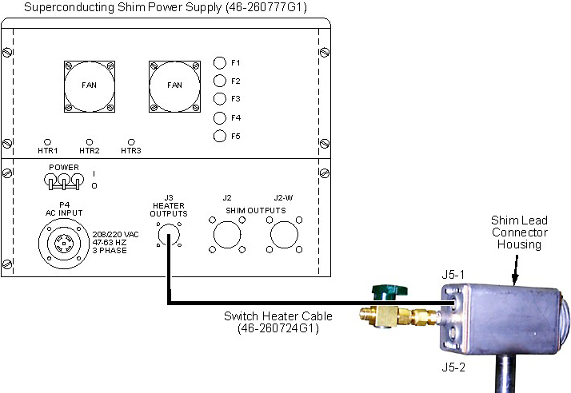
| ||||
| Connect only one Heater Wire Harness to the Shim Lead Assembly. | ||||
Verify that connector P5 on the Switch Heater Cable (Run 604) is connected to connector J5-1 or J5-2 on the Shim Lead Assembly. (See Illustration 5.)
This check requires 12 hours between the first measurement and the second.
Verify that magnet pressure is 4.0 psig ±0.1 psig:
Initial on-site shimming - Turn on the T1, T2, and Axial heaters as required to increase magnet pressure to 4.0 psig ±0.1 psig.
If any currents loaded (reshimming) - Adjust magnet pressure to 4.0 psig ±0.1 psig using Magnet Monitor.
| ||||
| Do not turn on the Superconducting Shim Coil Power Supply until it is verified that ALL current controls are set to zero (turned fully counterclockwise). | ||||
| NOTE: | Make sure the Teslameter is on at least one hour before taking either measurement to ensure Teslameter stabilization. |
Remove LOTO and connect input power to the S/C Shim Coil Power Supply and turn on (I) all Shim Coil Switch Heaters for five (5) minutes to dump any residual shim currents.
Turn off (O) the Switch Heaters. Allow 3 to 5 minutes for the switch heaters to go persistent before continuing with Step 4.
Disconnect the Heater Cable (P703) from the Shim Coil Power Supply.
Turn off the Shim Coil Power Supply.
| ||||
| Electrical Shock Hazard | ||||
| Contact with connectors leading to an energized power supply can cause electrical shock. | ||||
| Follow lockout/tagout procedures while making electrical connections to the shim power supply. |
Disconnect and lockout/tagout input power to the Shim Coil Power Supply. Verify that no voltage is present by using a DVM or equivalent measuring device.
Measure and record the magnetic field (center frequency), “Frequency 1”.
| NOTE: | The Frequency 1 measurement should be taken as soon after ramping as possible. |
| ||||
| Do not move the probe between the first and second measurements. Do not move or rearrange any articles or equipment in or near the exam room during the test. | ||||
Verify that the magnet has stabilized (0.1 ppm/hr. maximum drift) by using this formula:
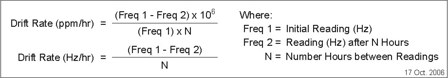
On the Magnet Monitor:
| ||||
| Shimming is affected by magnet pressure. Make sure the Magnet Monitor Pressure Controller is functioning properly and that magnet pressure is steady at 3.9 to 4.1 psig before starting shimming procedure. | ||||
Check magnet pressure. Make sure it is maintained within the 3.9 to 4.1 psig range when taking maps of the magnetic field.
Verify that the magnet helium level is ≥80%. Fill the magnet in conformance with Liquid Helium Fill to make sure the helium level is ≥80% before continuing.
Turn the Cryocooler off for 10 minutes. This will quench the Supercon Shield around the Coldhead.
| NOTE: | This only needs to be done before the initial shimming, but not between each shimming iteration. |
| ||||
| Always use the most recent revision of GE ShimTool Software CD, 5102783. The LCC300 Shimming procedure stated here includes shimming of WB series LCC300 magnets, which requires 5102783 Revision 6, minimum. | ||||
Connect the Shim Camera to the PC's COM port. Make sure all connections are secure.
Install the Mapping Fixture's Probe Array in conformance with Preparations for Field Measurement if not already installed.
If the most recent version of GE ShimTool Software CD, 5102783 is not installed on the computer being used:
Insert the CD into the computer, automatically launching the installation program. Select the operating system, either Windows 2000 or Windows XP, for the computer in use when asked. The CD should automatically install all ShimTool files at D:\MRshim (Windows XP) or C:\MRshim (Windows 2000).
Create a subdirectory for this magnet's .map, .cur and .shm files inside the D:\MRshim (Windows XP) or C:\MRshim (Windows 2000) directory where ShimTool was installed.
For W Series magnets, name the subdirectory W0####0, substituting the magnet's serial number for the ####. For WB Series magnets, name the directory WB####0.
Add extra zeros as necessary to ensure the subdirectory name is seven characters/numbers long. For example, the subdirectory for the W Series Magnet 22 should be W000220.
Copy the magnet's ATR shim file from the ATR floppy to the PC to the subdirectory created in Step 3.b.
Double-click on the CoronaShim icon or ShimTool25C.exe in the ShimTool directory in Windows Explorer.
When the screen shown in Illustration 6 displays:
Verify that the entry beside the word Series: matches the W or WB of the magnet to be shimmed.
Type W into the box beside Test Cell:.
| NOTE: | Use “W” for all shimming done at a customer site. |
Adjust the number displayed beside Number: to the serial number of the magnet to be shimmed.
Click [OK].
| NOTE: | If a subdirectory for storing all .map, .cur and .shm files was not manually created in
Step 3.b, ShimTool will create one automatically at D:\MRshim\W0####0 for W Series magnets or at D:\MRshim\WB####0 for WB Series magnets. (### represents the serial number selected.) Windows XP installations use D:\ drive; Windows 2000 installations use C:\ drive. |
Illustration 6: Register Magnet Type Screen
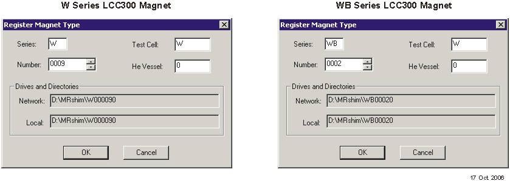
Click the [Camera Controls] button (fifth button from right) when the screen shown in Illustration 7 displays.
Illustration 7: ShimTool Main Screen Button Definitions
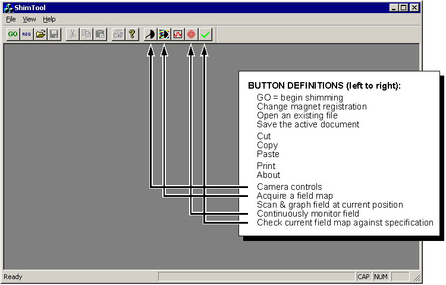
Verify that the Magnetic Field Camera Controls window (shown in Illustration 8) displays a Center Freq: of 127.7 mHz (rounded).
| NOTE: | If the program did not find a camera attached to the PC's
COM port (as in the upper left example in Illustration 8:
|
Illustration 8: Magnet Field Camera Controls: PC-Probe Communications

Choose an option on the Magnetic Field Camera Controls screen shown in Illustration 8:
Click the [Field Search] button to automatically find the center frequency of the magnet and update the Center Freq: displayed. (See Illustration 9.) An initial listing of (left to right) probe number, frequency in mHz, magnetic field strength in Gauss, standard deviation in Gauss and measurement count readings from each probe in the array is also displayed in the text box.
| NOTE: | The measurement counts should all read close to the number displayed beside Measurements: at the top of the screen. |
Click the [Scan] button to verify probe functioning by updating the scrolling text box.
Illustration 9: Magnet Field Camera Controls with Field Search Button

Select [OK] to finish camera setup and close the Magnetic Field Camera Controls screen.
Continue with Re-establishing ATR SC Shim Currents, Re-establishing ATR SC Shim Currents.
| ||||
| Potential Fatal Injury! | ||||
| Make sure to review and fully understand all superconducting magnet portions of MR Magnet - Safety Requirements before starting the Shimming procedure. |
| ||||
| Asphyxiation Hazard! | ||||
| The Shimming Procedure generates odorless, colorless helium gas that displaces oxygen in the air. | ||||
| Make sure magnet room vent exhaust fan is on before starting the Shimming procedure. |
| ||||
| Potential Magnet Quench | ||||
| The magnet may quench if the Nupro Valve on the Shim Lead is closed or the Shim Lead is not cold. | ||||
| Make sure the Nupro Valve is fully open and the valve is frosted before slowly engaging the Shim Lead. Do not remove the Shim Lead's Orifice Cap that controls helium gas flow. Always engage/disengage the Shim Lead in conformance with Shim Lead Engagement and Disengagement. |
| ||||
Make sure that the shim power supply is calibrated in conformance
with the vendor's manual and that the shim heater currents are set
as below before use.
| ||||
| ||||
Before turning on the shim coil power supply and applying shim
currents, make sure the following conditions exist to prevent irreparable
damage to the vapor-cooled Shim Leads:
| ||||
| ||||
| The “Recommended Total Current” values found on
the Acceptance Test Report (ATR) that shipped with the magnet must
be entered into the Superconducting (S/C) Correction Coils before
performing field mapping and any further S/C or passive shimming. The coil groups are:
Each coil group is connected to one heater circuit on the shim power supply. If the only current change was in the Axial 2 Coil, turning the Axial Switch Heater on would dump the currents in Axial Coils (AX1 to AX6) and the appropriate currents for each Axial Coil would need entering. | ||||
| NOTE: | Always check the ATR for any possible magnet-specific current settings. |
Make sure vapor is escaping from the Shim Lead and the lead is frosted, then turn on the power supply.
| ||||
| Do not move articles or equipment in the Magnet Room while adjusting shim currents. | ||||
Repeat the following steps ( Step 2.a through Step 2.g) to input ATR shim currents for each shim group in sequence: T1, then T2 and Axial. (See Table 1.)
Set the Shim Group Select Switch to the appropriate group: T1, T2 or Axial. (See Illustration 10.)
Table 1: S/C Shim Groups
| Transverse 1 Shim Group | Transverse 2 Shim Group | Axial Shim Group | |
|---|---|---|---|
| Course/Fine Adjust Potentiometer & Polarity Light/Switch | “Shim Group Select” Switch Setting | ||
| Middle | Bottom | Top | |
| Coil (Circuit) | Coil (Circuit) | Coil (Circuit) | |
| 1 | T1-1 (Z X2Y2) | T2-1 (ZXY) | AX1 (Z1) |
| 2 | T1-2 (X) | T2-2 (Y) | AX2 (Z2) |
| 3 | T1-3 (Z2X) | T2-3 (Z2Y) | AX3 (Z3) |
| 4 | T1-4 (ZX) | T2-4 (ZY) | AX4 (Z4) |
| 5 | T1-5 (X2Y2) | T2-5 (XY) | AX5* (Z5)* |
| 6 | T1-6* (X3)* | T2-6* (Y3)* | AX6* (Z6)* |
| * Not applicable to W0 Series LCC300 magnets. | |||
Illustration 10: Shim Power Supply Controls (Front Panel)
Set the Course/Fine Current Adjust potentiometers on the Shim Power Supply to zero (0) amps (fully CCW).
| NOTE: | The polarity relays will not change polarity if there is any current flowing through their respective channels. The current must be reduced to zero before the relays will change to the position indicated by the external switches on the power supply. |
| ||||
| Magnet damage is possible if heater currents are not set correctly. | ||||
Turn on the selected group's Switch Heater (Transverse 1, Transverse 2 or Axial) and wait 30 seconds for the switches to go resistive.
Set the ATR “total” currents and polarities for the shim coil group.
| ||||
| Since the LCC300 magnet correction coils have a greater time constant (inductance : resistance ratio) than those of a 1.5T magnet, a longer settling time is required for the shim currents. It is important that the shim current settling time is in conformance with Table 2 to prevent subsequent current drift after settling. | ||||
Allow the shim current to settle for the time shown in Table 2.
Table 2: Shim Current Settling Times (Re-establishing ATR)
| Shim Coil Group | Settling Time |
|---|---|
| T1 | 20 minutes |
| T2 | |
| Axial* | 45 minutes* |
| * Axial times represent minimum times. Axial coupling may require longer wait times to meet the magnetic field stabilization requirements stated in Step 3 below. | |
| ||||
| Failure to accurately set the power supply currents and polarity can greatly increase the number of plotting iterations (i.e., time to shim the magnet). | ||||
Verify the ATR currents, then turn off the heater group and wait five (5) minutes.
After waiting five minutes, gradually turn the power supply Current Adjust Potentiometers down to zero.
For axial currents only, monitor magnetic field drift until it stabilizes (i.e., <2 Hz change in total magnetic field strength over a two-minute period):
Click the [Continuously Monitor Field] button (second button from right) from ShimTool's main screen. (See the illustration below.)
Illustration 11: ShimTool Main Screen Buttons
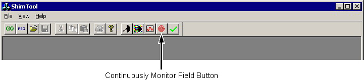
Make sure the probe array is in the 30° position (slice/arc 2 in Table 3), then select Probe 22.
Table 3: Field Camera Mapping Slices (Positions)
| Slice/Arca (Position) | Degrees | Slice/Arca (Position) | Degrees | Slice/Arca (Position) | Degrees | Slice/Arca (Position) | Degrees |
|---|---|---|---|---|---|---|---|
| 0 | 0/360b | 6 | 90b | 12 | 180b | 18 | 270b |
| 1 | 15 | 7 | 105 | 13 | 195 | 19 | 285 |
| 2 | 30 | 8 | 120 | 14 | 210 | 20 | 300 |
| 3 | 45 | 9 | 135 | 15 | 225 | 21 | 315 |
| 4 | 60 | 10 | 150 | 16 | 240 | 22 | 330 |
| 5 | 75 | 11 | 165 | 17 | 255 | 23 | 345 |
| a The
slice/arc number shown here and in ShimTool corresponds with the
number stamped on the mapping fixture's Positioning Wheel. b The remote box flashes slower at these positions. | |||||||
Select [Start] on the screen that displays to begin measuring field strength and drift. Record the starting frequency for use in Step 3.d.
Wait two (2) minutes, select [Stop], and record the change between the starting and present frequencies.
Once the magnetic field is stable and the Axial settling time stated in Table 2 has elapsed, turn the Axial Switch Heater off, and allow the Heater to cool for five (5) minutes.
Slowly turn all the Course/Fine Current Adjust Potentiometers on the shim power supply back down to zero (0) amps (fully CCW).
Close the Shim Lead's Nupro Vent Valve.
Continue with Running ShimTool, Running ShimTool.
| ||||
| The magnet's center frequency must be stable in conformance with the Field Stability Check, Field Stability Check, before any alteration to the magnet's S/C or passive shims are made. | ||||
| ||||
| Moving articles or equipment in the Magnet Room may affect readings of magnetic field strength. | ||||
| NOTE: | Locate the Mapping Fixture and Shim Camera at the magnet's approximate center in conformance with Preparations for Field Measurement before centering the Probe Array using ShimTool. |
Click the [Acquire Field Map] button (fourth button from right) from ShimTool's main screen. (See below.)
Illustration 12: Acquire Field Map Button on ShimTool Main Screen
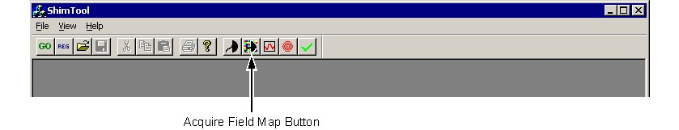
Click the [Static] button when the screen shown in Illustration 13 displays, and then select W_CoronaCamera50dsv from the Map/Camera Type drop-down menu.
| NOTE: | Leave the default number beside Slices: and the file name beside Map Name: unchanged. |
Illustration 13: Acquire Field Map

Make sure the curved part of the field camera's probe array faces directly up (0° position).
| ||||
| Moving any articles or equipment in or near the Magnet Room may affect the field map. | ||||
| ||||
Do not allow nonessential conversation/distractions during map
acquisition. If an error occurs during field map acquisition:
| ||||
Select [OK] to begin mapping the magnet's magnetic field.
| NOTE: | The field map screen will display with the Acquire Progress window overlaid. (See the illustration below.) The field camera's remote box should also start to flash repeatedly. |
Illustration 14: Field Map Being Acquired
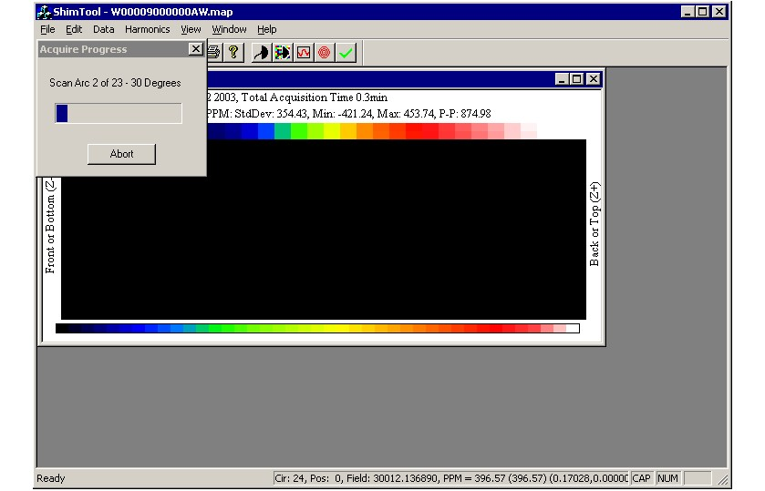
Press the field camera's remote box switch when it starts flashing repeatedly. The light will stop flashing and stay on while one slice of the field map will be acquired (except after the last slice when the light will go off).
When the camera's push-button switch starts flashing repeatedly again, slowly and smoothly rotate the camera one position (15°) clockwise.
Repeat Step 5 and Step 6 until 24 map slices (slice 0 at 0°/360° through slice 23 at 345°) are taken. (See Table 3 for a summary of the slices.)
| NOTE: | The remote box will flash slower at positions 0 (0°/360°), 6 (90°), 12 (180°) and 18 (270°). |
| NOTE: | When all 24 slices are taken, the finished map displays
on the field map screen shown in Illustration 15. ShimTool automatically assigns a sequential alphabetic name to
both the displayed map and the .map file it creates.
The file name consists of:
|
Record the mapped peak-to-peak (P-P) ppm figure displayed on the Field Map screen (shown below) in Shimming Process Data on the same line as the map name.
Illustration 15: Sample First Field Map Screen for Axial Centering
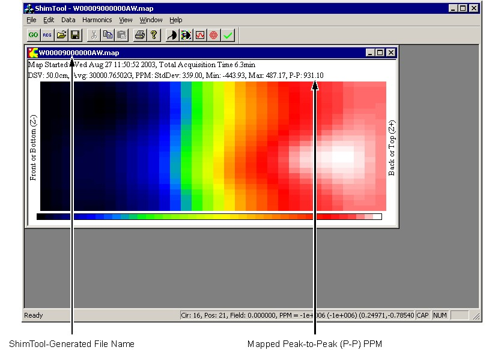
If this is the first field map taken since the mapping fixture was installed or moved in any substantial way, use this map to axially center the probe array:
Choose Decompose (F6) from the Harmonics menu (fourth menu from the left in Illustration 15).
Select [OK] when the screen shown below displays.
Illustration 16: Select Harmonics
Examine the PPM value at the right end of Line 11 when the screen below displays.
Illustration 17: Field Map Harmonics
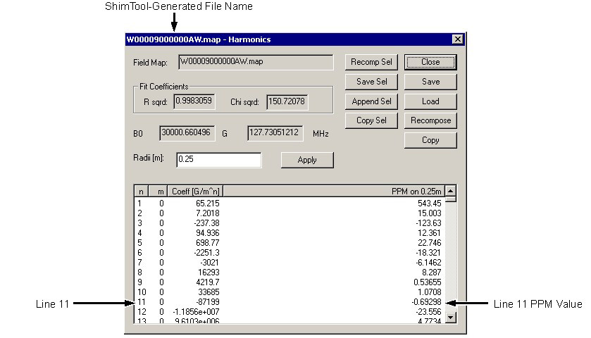
If the PPM value on Line 11 (harmonic 11, 0) is >-1.0 ppm and <+1.0 ppm, the probe array is centered axially. Continue with Step 10, and use this centered map to run ShimTool set for S/C shimming.
Verify that the mapping fixture's Positioning Wheel is in the groove labelled LCC. (See the illustration below.)
Illustration 18: Mapping Fixture 2380758's Axial Positioning Screw

Divide this PPM value by 1.7 as shown below.
| NOTE: | On normal polarity magnets:
|
| NOTE: | Turning in increments smaller than a quarter turn is not necessary. |
Loosen the axial positioning screw locking wheel, carefully turn the axial positioning screw (shown in Illustration 18 and Illustration 19) the number of full turns calculated in Step 9.f, and tighten the locking wheel.
Illustration 19: LCC300 Field Mapping Fixture 2380758 Basic Components
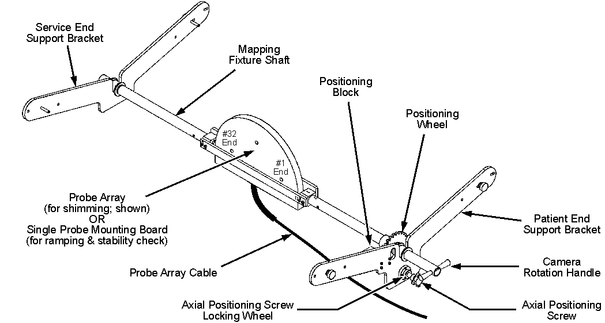
Record the ShimTool-generated .map file name in Shimming Process Data in the upper section: Maps for Probe Centering.
Record the ShimTool-generated .map file name in the appropriate place(s):
Record map names used for hybrid shimming (passive and superconducting) in Shimming Process Data, Passive Shimming Data, and SC Shimming Data.
Record map names used when running ShimTool for superconducting only in Shimming Process Data and SC Shimming Data.
Close ShimTool's harmonics window(s).
Illustration 20: Sample Field Map Screen for Shimming
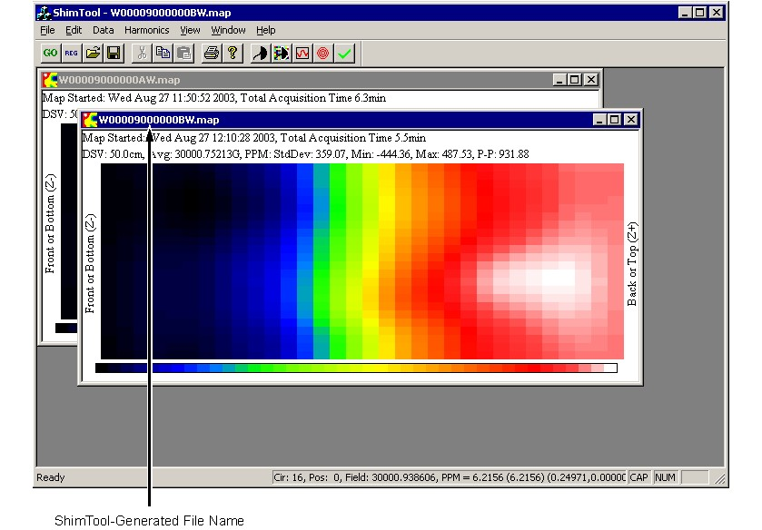
Click the [GO] button (first button on left) from ShimTool's main screen. (See the illustration below.)
Illustration 21: ShimTool Main Screen Buttons
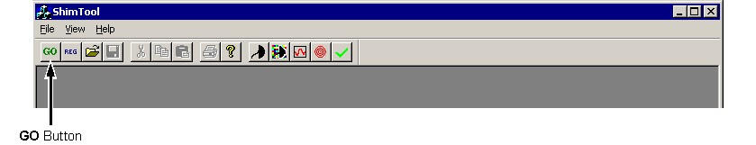
Select the [Shim or Reshim a Magnet] radio button and [GO] when the following screen displays.
Illustration 22: What Would You Like to Do? Screen
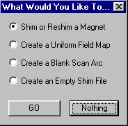
When the Select the Type of Shim to Perform screen shown in Illustration 23 displays:
Verify that the Magnet Type field reads Cylindrical.
Illustration 23: Select the Type of Shim to Perform Screen
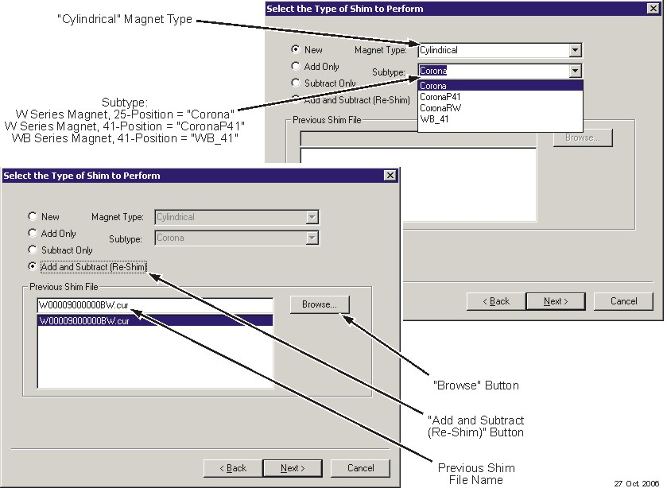
Select the correct Magnet Subtype stated in Table 4.
Table 4: Magnet Subtype and Calibration File Choices
| Series | Positions | Correct Choices | ||
|---|---|---|---|---|
| Magnet Subtype | Passive Calibration File | Active Calibration File | ||
| W | 25a | Corona | W_CoronaP.cal | W_CoronaSC.cal |
| W | 41a | CoronaP41 | W_CoronaP41.cal | W_CoronaSC.cal |
| WA | 41 | CoronaRW | W_CoronaP41.cal | W_CoronaSC_MarkII |
| WB | 41 | G3_41 | W_CoronaP41.cal | WB_CoronaSC_MarkIII |
| aW Series LCC300 magnets with serial numbers W00006, W00029, W00044 (on site), W00058, W00069 and ≥ W00100 use 41-position passive shimming. All WB Series LCC300 magnets are shimmed using 41 positions. | ||||
Click the [Add and Subtract (Re-Shim)] button.
| NOTE: | Verify the information in the Magnet Type and Subtype fields before selecting [Add and Subtract (Re-Shim)] since these fields cannot
be changed after this button is selected. ShimTool is only run with the [New] button selected at the factory. |
| ||||
| Do not use incorrect file names. Keep track of file names and iterations used and what they were used for by entering this information in Shimming Process Data (master log of the shimming process) and the Data Sheets affected by superconductive shimming (SC Shimming Data) and by hybrid shimming (Passive Shimming Data and SC Shimming Data) so that accurate file names can be used at any later time. | ||||
| ||||
| Use the ATR .cur/.shm file names as “Previous Shim File” for the first iteration of ShimTool after the ATR S/C currents are reestablished. Make sure these files are copied to the computer's subdirectory for the magnet (created in Field Camera Set-Up Using ShimTool, Step 3.b) before starting the iteration. | ||||
Accurately select the Previous Shim File name (the last file with the .cur extension for S/C shimming or .shm extension for passive shimming) from the list beside Previous Shim File:.
| NOTE: | If the output file is not located as stated in Table 5 and the full path to the correct shim file cannot be recalled, click the [Browse] button, locate the correct file, select it, and open the file. |
Table 5: Directory Path, File Names & File Format
| Magnet | Series | File Type | Directory Path to File | |
|---|---|---|---|---|
| Windows 2000 | Windows XP | |||
| 3.0T LCC300 | W | SC | C:\MRshim\W0####0\W0####0.cur | D:\MRshim\W0####0\W0####0.cur |
| Passive | C:\MRshim\W0####0\W0####0.shm | D:\MRshim\W0####0\W0####0.shm | ||
| Map | C:\MRshim\W0####0\W0####0.map | D:\MRshim\W0####0\W0####0.map | ||
| WA | SC | C:\MRshim\WA####0\WA####0.cur | D:\MRshim\WA####0\WA####0.cur | |
| Passive | C:\MRshim\WA####0\WA####0.shm | D:\MRshim\WA####0\WA####0.shm | ||
| Map | C:\MRshim\WA####0\WA####0.map | D:\MRshim\WA####0\WA####0.map | ||
| WB | SC | C:\MRshim\WB####0\WB####0.cur | D:\MRshim\WB####0\WB####0.cur | |
| Passive | C:\MRshim\WB####0\WB####0.shm | D:\MRshim\WB####0\WB####0.shm | ||
| Map | C:\MRshim\WB####0\WB####0.map | D:\MRshim\WB####0\WB####0.map | ||
| Directory path format:
Drive letter + :\MRshim\ + seven (maximum) character
Subdirectory Name + \ + File Name. Seven-character Subdirectory Name format: Series Number (box beside Series: + 0 (if required) + Magnet Number (box beside Number:) + Helium Vessel Number (assigned at the factory). | ||||
Verify all information on the Select the Type of Shim to Perform screen is accurate, then select [Next>].
When the Select the Input Field Map screen shown in Illustration 24 displays, accurately type the file name of the last field map (.map extension) taken in Field Map Acquisition, Field Map Acquisition.
| NOTE: | If the output file is not located as stated in Table 5 and the full path to the correct map file cannot be recalled, click the [Browse] button, locate the correct file , select it, and open the file. |
Illustration 24: Select the Input Field Map Screen

Select [Next>].
| NOTE: | ShimTool will look at the data contained in the file specified
in
Step 6.
|
Illustration 25: Bad Data Point(s) Alert
Select Unified/Multi-Volume Shimming when the Shim Target and Tolerance Controls screen (shown in Illustration 26) displays.
Make sure the Map Type field reads G3UnifiedTarget.
Illustration 26: Shim Target and Tolerance Controls
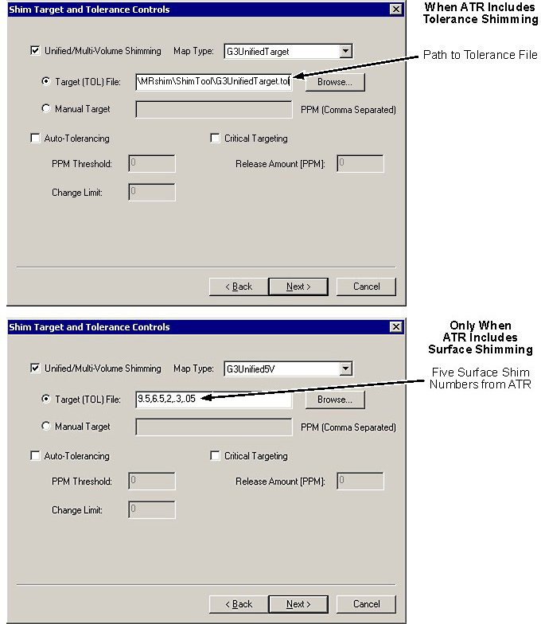
Select [Target (TOL) File] radio button.
If the ATR was produced using Tolerance Shimming, the path to G3UnifiedTarget.tol displays in the field to the right of Target (TOL) File:.
| NOTE: | The Windows XP path to the tolerance file should be: D:\MRshim\ShimTool\G3UnifiedTarget.tol. Windows 2000 installations use the C: drive instead of the D: drive. If the correct tolerance file is not located there and the full path to the correct location cannot be recalled, click the [Browse] button, locate the correct file, select it, and open the file. |
If the ATR was produced using Surface Shimming, a string of five numbers separated by commas displays in the field to the right of Target (TOL) File:.
| NOTE: | The choice between Tolerance and Surface Shimming is made at the factory to give the best shimming results. This choice only affects the screen shown in Illustration 26, the ShimTool text file shown in Illustration 33 and Illustration 34 and the quantity of shims used, but has no procedural impact on the Field Engineer. |
Click [Next>] to proceed to the Select the Calibration File screen shown below.
Illustration 27: Select the Calibration File Screen
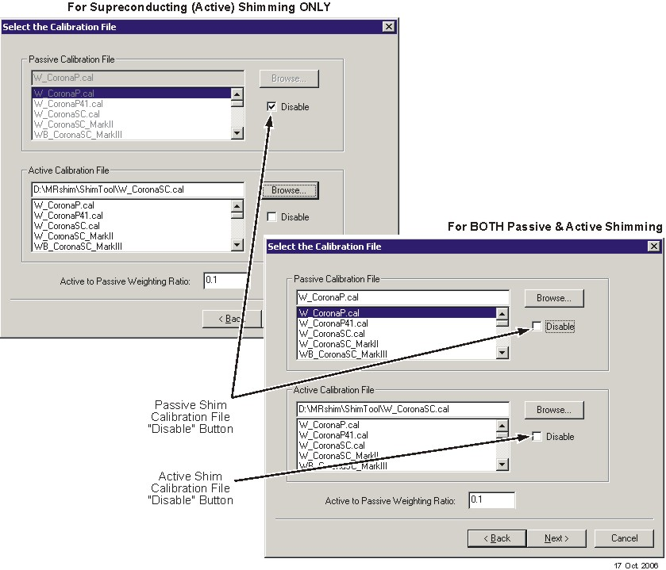
Select the .cal file from the scrolling list of available calibration file list below Passive Calibration File (shown in Illustration 27) to match the number of shim positions stated in the ATR. Table 4 shows the correct selection choices.
| NOTE: | LCC300 magnets with serial numbers W00006, W00029, W00044
(on site), W00058, W00069 and ≥W00100 use 41-position passive shimming.
All WB Series LCC300 magnets are shimmed using 41 positions. Shim tray positions are shown Passive Shimming, Passive Shimming. |
For W Series LCC300 magnets, select W_CoronaSC.cal from the scrolling list of available calibration files listed below Active Calibration File. For WB Series LCC300 magnets, select WB_CoronaSC_MarkIII. (See Illustration 27 and Table 4.)
| NOTE: | If either the active or passive calibration files do not display in the respective scrolling lists, click the [Browse] button, locate the correct file, select it, and open the file. The Windows XP paths to the calibrations files should be D:\MRshim\Shimtool\*.cal (where the * represents the correct calibration file as stated in Table 4). Windows 2000 installations use the C: drive instead of the D: drive. |
If only one type of shimming (passive or active) will be done during this iteration (shown in Illustration 2, Shimming Flowchart), select the [Disable] box (shown in Illustration 27) as follows:
Select the [Disable] box beside Passive Shim Calibration File if preparing to only perform superconducting (active) shimming (Superconducting Shimming, Superconducting Shimming).
Select the [Disable] box beside Active Shim Calibration File if preparing to only perform passive shimming (Passive Shimming, Passive Shimming). (Not recommended.)
| NOTE: | Normally, the Active Shim Calibration File is never disabled. |
| ||||
| ShimTool will allocate the results of its calculations to all forms of shimming that are not disabled. Extra shimming iterations may result from not setting the disable boxes accurately for the type of shimming being done. | ||||
Click [Next>].
Click [Next>] without making changes to the Disable Shims/Change Limits screen (shown below) when it displays.
Illustration 28: Disable Shims/Change Limits Screen
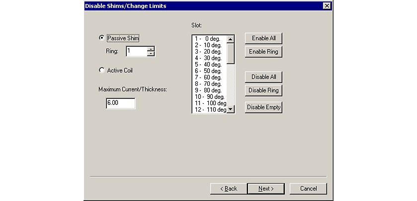
Click [Next>] without making changes to the Couple Passive Shim Positions (Optional) screen (shown below) when it displays.
Illustration 29: Couple Passive Shim Positions (Optional) Screen
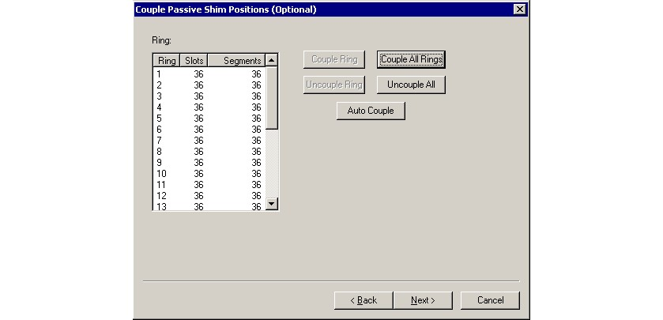
Verify that the output file name on the Select Shim Target PPM screen (Illustration 30) that displays next, matches the .map file name, but with a .shm or .cur extension. Make no other changes to the this screen.
| NOTE: | If the output file is not located as stated in Table 5 and the full path to the correct map file cannot be recalled, click the [Browse] button, locate the correct .map file, select it, and open the file. Once opened, change the file extension to .shm for passive shimming output or to .cur for S/C shimming output. |
Illustration 30: Select Shim Target PPM Screen
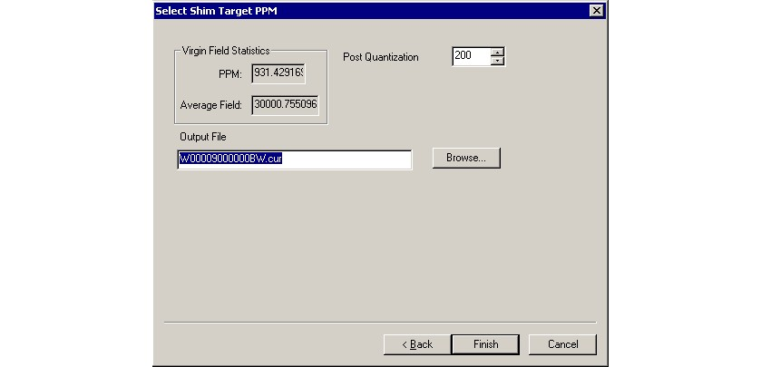
Use the [<Back] button as required to review and verify all entries and choices on previous screens are correct.
Click [Finish]. ShimTool will begin processing the shimming information.
| NOTE: | A Shim Status window will display while ShimTool is processing and close when the processing is complete. |
Click [Dismiss] when the Shim Summary screen (similar to the following illustration) displays.
Illustration 31: Shim Summary Screen
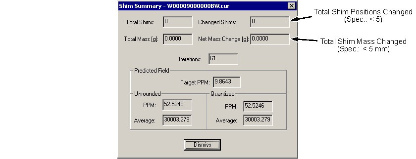
When the more complete shim iteration results display (similar to those shown in Illustration 32), print the ShimTool results:
The .cur / .shm text file is automatically saved by ShimTool. It can be printed from NotePad, WordPad or a word processor for pages similar to Illustration 33 and Illustration 34. ShimTool can also open previously saved files for on-screen viewing by selecting Show the output SHM file from the Shim menu.
To obtain a multi-page paper version of the ShimTool results similar to Illustration 35 through Illustration 39:
Choose Print Lists... from the File menu,
Set the page orientation to Landscape, and
Click the [OK] button. (The multi-page paper version is generally easier to use while placing shims in the shim trays.)
| NOTE: | The "Passive Shims - Incremental Rounded Shim" information
on Page 3 of ShimTool's printout (Illustration 37 and Illustration 38) is the same information as contained under "Incremental
- Quantized" in the .shm file (Illustration 34). This page now shows the amount of change and the resulting total
at each shim position to be changed. (.cur files
do not contain incremental information.) The "Passive Shims - Total Rounded Shim" information on Page 4 of ShimTool's printout (Illustration 37 and Illustration 39) is the same information as contained under "Total - Quantized" in the .shm file (Illustration 34). |
| NOTE: | The following illustrations show the C: drive directory paths used by Windows 2000 ShimTool installations. Windows XP installations use D: drive directory paths instead. |
Illustration 32: Shim Iteration Results Displays
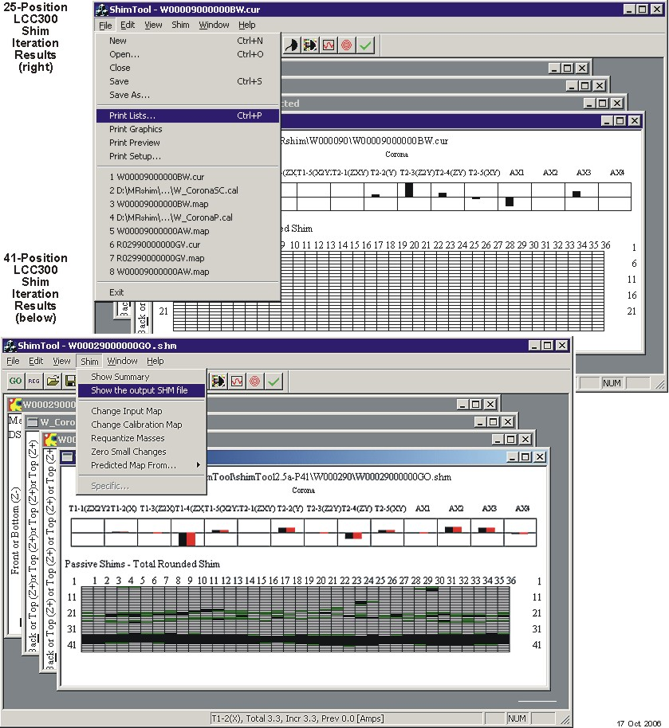
Illustration 33: Sample ShimTool Text File Displays (1 of 2)
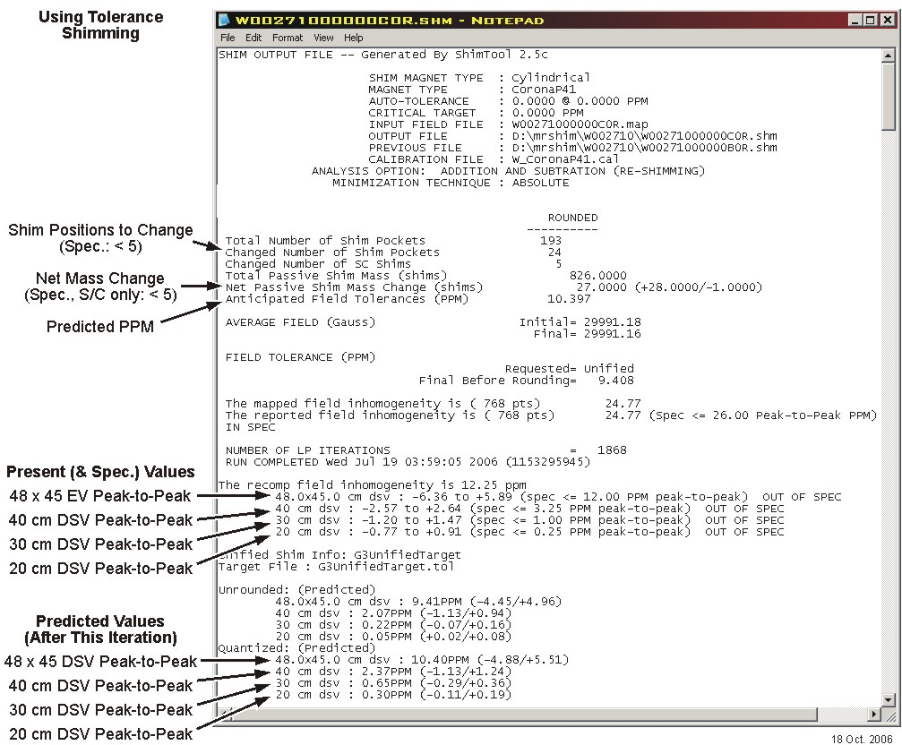
Illustration 34: Sample ShimTool Text File Displays (2 of 2)
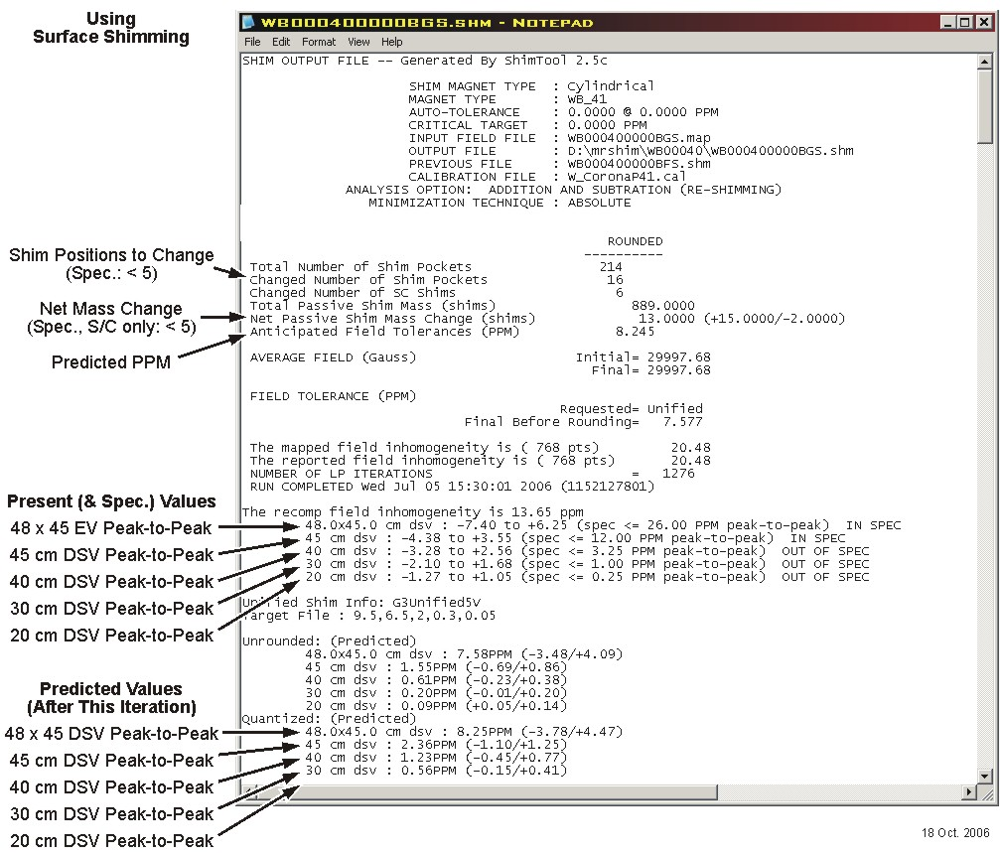
Illustration 35: Example ShimTool Printed Report, W Series LCC300, Pages 1 and 2

Illustration 36: Example ShimTool Printed Report, WB Series LCC300, Pages 1 and 2
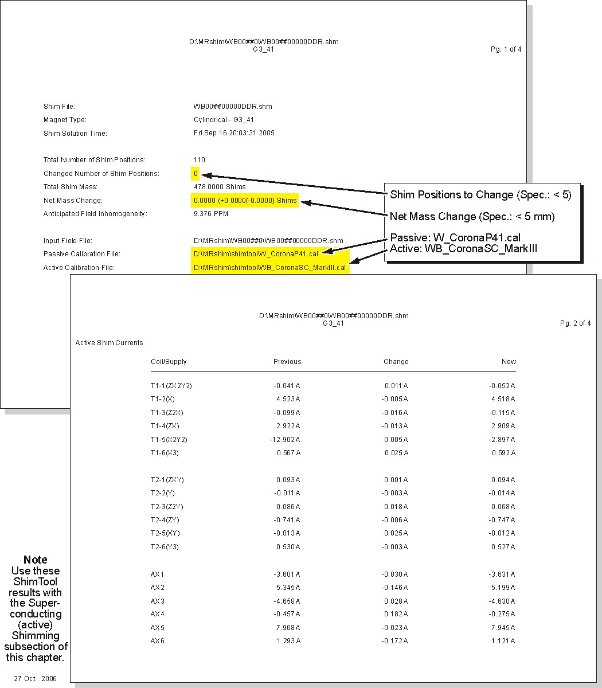
Illustration 37: Example ShimTool Printed Report, 25 Position Shim, Pages 3 and 4
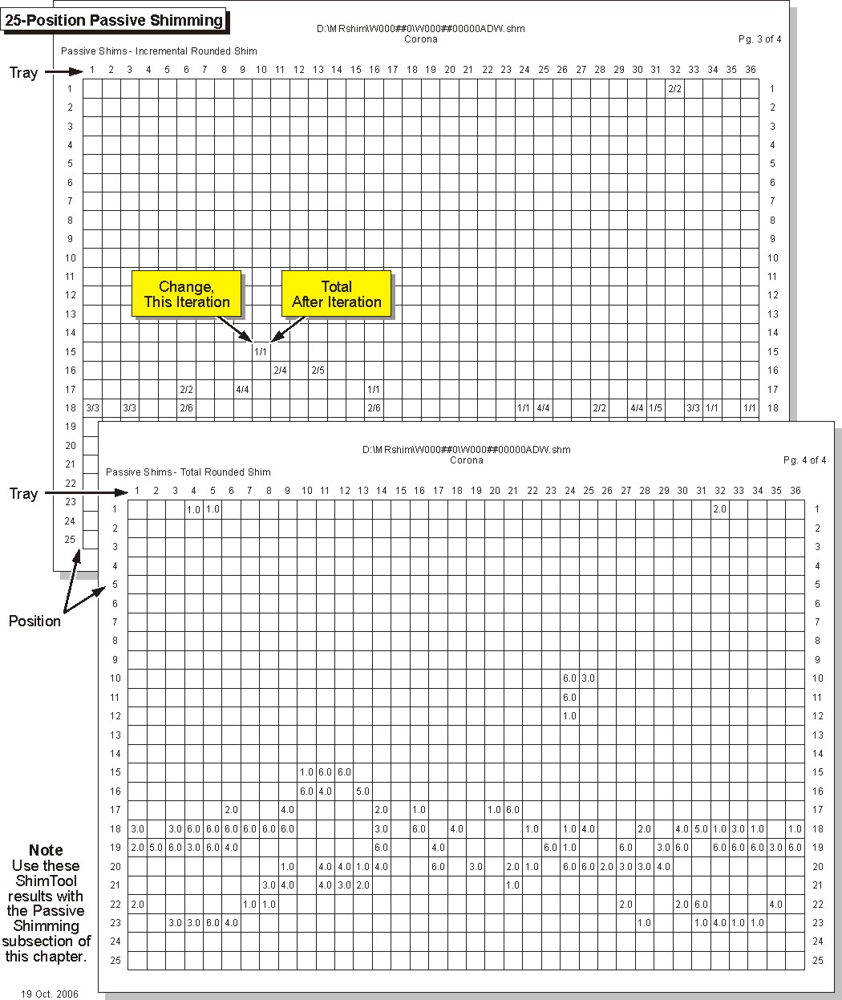
Illustration 38: Example ShimTool Printed Report, 41 Position Shim, Page 3
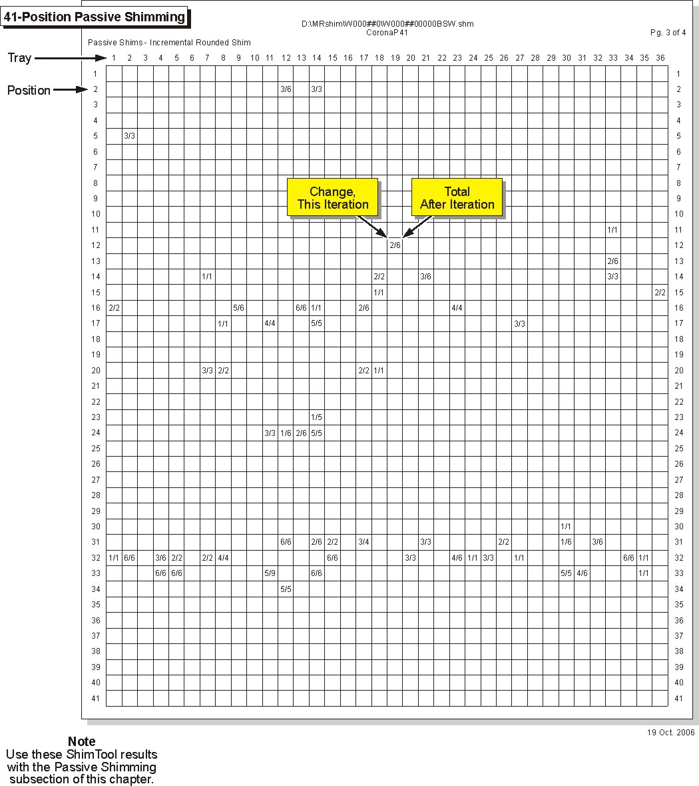
Illustration 39: Example ShimTool Printed Report, 41 Position Shim, Page 4
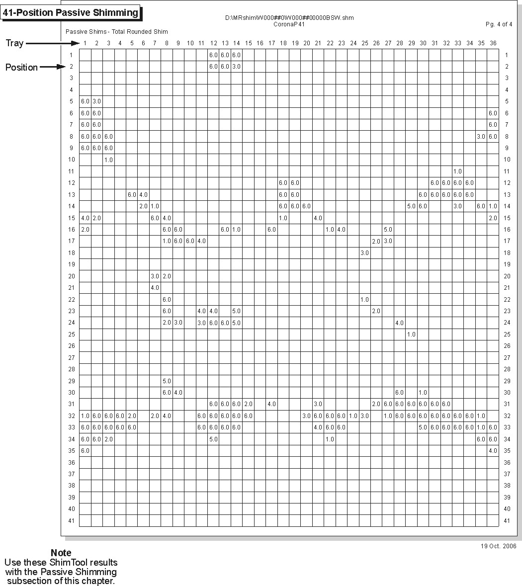
Record the “Anticipated Field Tolerance (PPM)" value shown in the .cur / .shm file in Shimming Process Data under “Predicted PPM” for the current iteration.
Record the “Total Passive Shim Mass (shims)” value shown in the .cur / .shm file in Shimming Process Data under “Passive Shim Mass (mm)” for the current iteration.
| NOTE: | Shim mass (shims) refers to the total thickness in millimeters of shims in all shim tray positions. |
On the first iteration, using the centered map set to calculate S/C shimming only, examine the four volumes: 48.0 x 45.0 cm DSV, 40 cm DSV, 30 cm DSV and 20 cm DSV listed under The recomp field inhomogeneity is ..... Compare these values to the specifications shown in Table 6.
| NOTE: | This step corresponds to the diamond-shaped decision box labelled Are PPM Values For All 4 Volumes Under “Quantized (Predicted)” Within Spec? in Illustration 2, Shimming Flowchart. |
| NOTE: | The “45 cm DSV” volume displayed, when the ATR includes Surface Shimming, is not important during field shimming and can be ignored. |
Table 6: Volumetric Specifications
| Volume | Peak-to-Peak PPM Specification |
|---|---|
| 48.0 x 45.0 cm (elliptical) DSV | 12.00 ppm |
| 40 cm DSV | 4.00 ppm |
| 30 cm DSV | 1.20 ppm |
| 20 cm DSV | 0.30 ppm |
If all four volumes listed under The recomp field inhomogeneity is ....are within specification, then the magnet is shimmed. Continue with Finalization, Step 1.
If any volume listed under The recomp field inhomogeneity is ... is not within specification, compare the “Quantized (Predicted)" values for the four volumes to the specifications shown in Table 6.
If all four volumes listed under Quantized (Predicted) are within specification:
Apply the S/C shim currents called for by ShimTool in conformance with Superconducting Shimming, Superconducting Shimming.
Return to Field Map Acquisition, Field Map Acquisition, to take a new map and run ShimTool for S/C shimming only.
Continue with Step 7.
If any volume listed under Quantized (Predicted) is not within specification:
Return to Acquiring a Shim File, Acquiring a Shim File, and run ShimTool for both passive and S/C shimming.
Continue with Step 6.
After running ShimTool set for both passive and S/C shimming, examine the Net Mass Change and the Changed Number of Shim Positions values in the ShimTool reports summary shown in: Illustration 31, printed .cur / .shm files shown in Illustration 33 and Illustration 34 or ShimTool-printed shown in: Illustration 35 through Illustration 39. Compare these values to the specifications shown in Table 7.
| NOTE: | This step corresponds to the diamond-shaped decision box labelled Passive Shim Change < 5 mm and < 5 Positions? in Illustration 2, Shimming Flowchart. |
Table 7: Passive Shim Change Specifications
| Measure | Specification |
|---|---|
| Net Mass Change | <5 mm |
| Changed Number of Shim Positions | <5 Positions |
If the specifications in Table 7 were not met (either Net Mass Change is ≥5 mm or Changed Number of Shim Positions is ≥5):
Install the passive shims called for by ShimTool in conformance with Passive Shimming, Passive Shimming.
Once the passive shims are installed, apply the S/C shim currents called for by ShimTool in conformance with Superconducting Shimming, Superconducting Shimming.
Return to Field Map Acquisition, Field Map Acquisition, to take a New map and run ShimTool for both passive and S/C shimming.
Repeat Step 6.
If the specifications in Table 7 were met (both Net Mass Change is <5 mm and Changed Number of Shim Positions is <5):
Return to Acquiring a Shim File, Acquiring a Shim File, to run ShimTool for S/C shimming only.
Apply the S/C shim currents called for by ShimTool in conformance with Superconducting Shimming, Superconducting Shimming.
Return to Field Map Acquisition, Field Map Acquisition, to take a New map and run ShimTool for S/C shimming only.
Examine the ShimTool text file's four volumes (48.0 x 45.0 cm DSV, 40 cm DSV, 30 cm DSV and 20 cm DSV) listed under The recomp field inhomogeneity... (Illustration 33 and Illustration 34). Compare these values to the specifications shown in Table 6.
If any volume is not within specification, return to Field Map Acquisition, Field Map Acquisition, to take a New map and run ShimTool for S/C shimming only.
If all volumes are within specification, the screen shown in Illustration 40 will display.
Click [No].
Exit ShimTool and continue with Finalization, Step 1.
| NOTE: | The Congratulations screen means the magnet is shimmed to specification. Writing an ATR file is not needed after the magnet has left the factory. |
Illustration 40: Congratulations Screen
Do not attempt to passive shim a 3.0T magnet without reading, understanding and following these safety alerts:
| ||||
| Potential Fatal Injury! | ||||
| Make sure to review and fully understand all superconducting magnet portions of MR Magnet - Safety Requirements before starting to passive shim the magnet. |
| ||||
| Potential Fatal Injury! | ||||
| Make sure to fully comply with all required items for the Shimming procedure in the 'Magnet & Cryogen Service Safety Requirements' subsection of MR Magnet - Safety Requirements before and while performing magnet passive shimming. |
| ||||
| Potential Fatal Injury! | ||||
| Have all “Work Assistants” or “Work Observers” comply with the 'Buddy System Requirements & Certification' subsection of MR Magnet - Safety Requirements before starting to passive shim the magnet. |
| ||||
| Potential Projectile Hazard | ||||
| Ferromagnetic objects in a strong magnetic field can become dangerous projectiles. Steel shims in a magnetic field are subject to a force proportional to the steel's mass and to the field's strength. in a 3 tesla field forces >50 pounds (22.6 kg) may be encountered. An attracting force pulling a shim tray into the magnet will be encountered when a loaded tray is brought within 3 feet (1 meter) of the magnet bore. an attracting and/or repelling force will be encountered when inserting/removing a loaded shim tray into/from a track inside the magnet bore. a repelling force on a shim tray inside the magnet's bore may propel the tray out from the magnet when the tray is released from its fixed position. | ||||
Make sure to follow these safety requirements during passive
shim installation/removal:
|
| ||||
| Potential Skin Injury | ||||
| Fiberglass from the shim trays can splinter while inserting/removing trays. | ||||
| Wear nonslip gloves during shim tray insertion/removal to protect against fiberglass splinters from the trays. |
| ||||
| The LCC300 Field Mapping Fixture's patient end support bracket will have to be detached from the magnet in conformance with Preparations for Field Measurement while accessing the shim trays behind it and reattached before further mapping. | ||||
Align LCC300 Shim Tray Puller 2379661 with the shim tray to be pulled. (See the illustration below.)
Illustration 41: Align Shim Tray Puller with Shim Tray
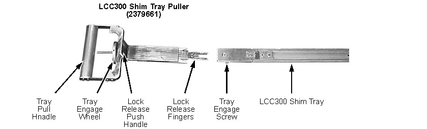
| ||||
| The shim tray puller MUST be fully and solidly engaged with the shim tray. | ||||
Insert the shim tray puller's tray engage screw into the threads at the end of the shim tray, then turn the puller's tray engage wheel to fully engage the screw with the tray. (See the following illustration.)
Illustration 42: Engage Shim Tray Puller with Shim Tray
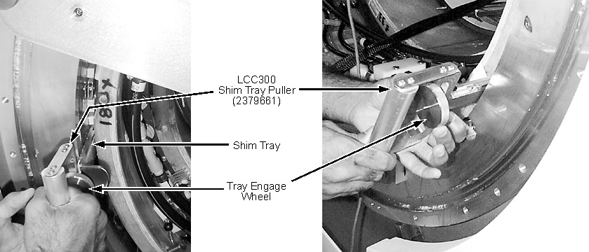
Push the shim tray puller's push handle to release the locking prongs on the tray. (See Illustration 41 and Illustration 43.)
Illustration 43: Release Shim Tray Puller
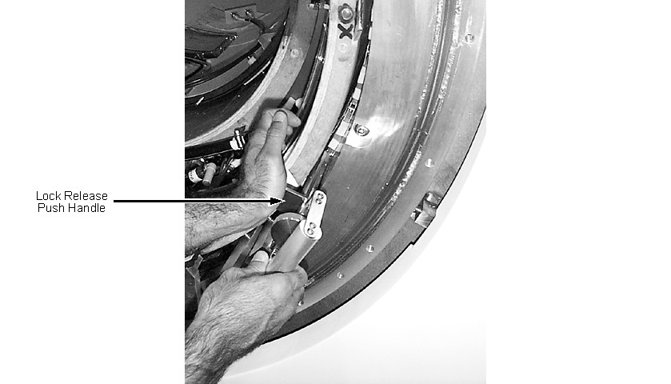
| ||||
| Potential Projectile Hazard | ||||
| Ferromagnetic objects in a strong magnetic field can become dangerous projectiles. | ||||
| Be prepared to manage the effects of a 3.0T field on the shim tray during tray insertion/removal. Adhere to all safety material listed above. |
| ||||
| Potential Skin Injury | ||||
| Fiberglass from the shim trays can splinter while inserting/removing trays. | ||||
| Wear nonslip gloves during shim tray insertion/removal to protect against fiberglass splinters from the trays. |
Carefully slide the shim tray straight out from its track. Have the work assistant hold onto the tray as soon as possible.
Illustration 44: Shim Tray Removal
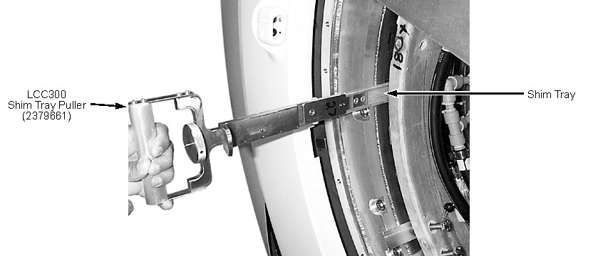
Work Assistant: Securely hold the shim tray, and carry it and the puller away from the magnet's field to a shim tray loading area in another room.
| ||||
| Load shims into the shim tray in a room away from the magnet's field. | ||||
First person: Identify which component shims are required to meet the total shim mass specified by ShimTool for each position in each tray.
| NOTE: | See Illustration 45 for a sample ShimTool shimming report, Illustration 46 for the LCC300 shim tray layout, and Illustration 47 for assembly of component shim per shim position. Illustration 45 shows the C: drive directory paths used by Windows 2000 ShimTool installations. Windows XP installations use D: drive directory paths instead. |
Illustration 45: Example ShimTool Printed Report (Pages 3 and 4 of 25-Position Report)
Illustration 46: Shim Tray Layout

Illustration 47: Assembly of Component Shims Per Shim Position
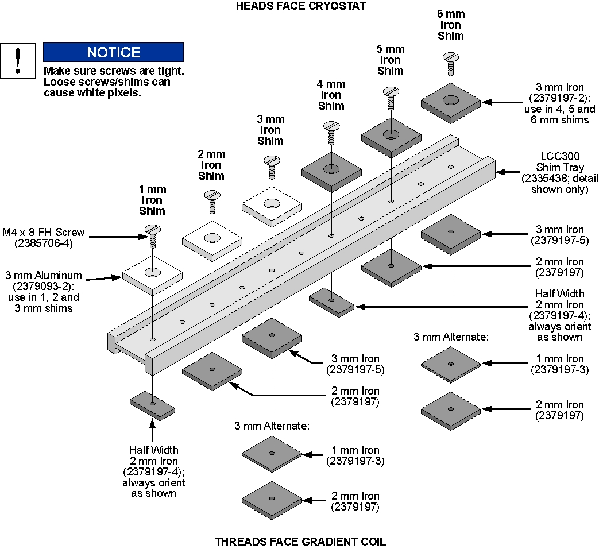
| ||||
| Make sure screws holding shims to shim tray are fully tightened. Use Torque Screwdriver 46-294167P81. Loose screws/shims can cause white pixels. | ||||
Securely screw the component shim arrangement to the shim tray position as shown in Illustration 47. Torque each screw to 10 inch-pounds using torque screwdriver 46-294167P81 (included in LCC300 Passive Shimming Kit 2386029). Orient every position in each tray identically (screw heads facing the same way, etc.)
Second person (not the first): Verify that incremental shims were added/subtracted in conformance with the “Passive Shims - Incremental Rounded Shim” information on Page 3 of ShimTool's printout. (Illustration 45).
| ||||
| Do NOT change the name of the .shm file. During the next shimming iteration ShimTool uses the steel quantity/location information from this iteration's .shm file and a new map of the field with that steel installed to calculate its new report. | ||||
Both people separately: Verify that the total shims at each tray position equals the total shims for that tray position specified in the “Passive Shims - Total Rounded Shim” information on Page 4 of ShimTool's printout (shown in Illustration 45).
If the actual shim totals in each position match ShimTool's printout/.shm file, then continue with Shim Tray Insertion, Shim Tray Insertion.
If the actual shim totals do not match ShimTool's printout/.shm file in any position:
Edit this iteration's .shm file's “Total - Quantized” pages to reflect the actual steel on the trays.
Save the edited .shm file using its existing name.
Continue with Shim Tray Insertion, Shim Tray Insertion.
| ||||
| Potential Skin Injury | ||||
| Fiberglass from the shim trays can splinter while inserting/removing trays. | ||||
| Wear nonslip gloves during shim tray insertion/removal to protect against fiberglass splinters from the trays. |
| ||||
| Field-supplied flexible plastic sheets must be free of sharp edges and bent corners. | ||||
If 10 mil thick flexible plastic sheets (x-ray film, mylar or equivalent), 10 in. x 14 in. (250 mm x 350 mm) minimum are available, bend 1.5 in. (40 mm) of one short edge to ~ 90°. Carefully slide the sheet between the shim tray guide of the tray to be inserted and the gradient coil wrap to protect the gradient coil wrap from damage.
| ||||
| Reconnect the shim tray puller to the shim tray in a room away from the magnet's field. | ||||
Screw the shim tray puller to the end of the shim tray.
| ||||
| Potential Projectile Hazard | ||||
| Ferromagnetic objects in a strong magnetic field can become dangerous projectiles. | ||||
| Be prepared to manage the effects of a 3.0T field on the shim tray during tray insertion/removal. Adhere to all safety material listed above. |
Securely carry the puller and tray to the magnet.
Align the end of the shim tray with the tray's track. Orient every tray in conformance with Illustration 48.
Illustration 48: Proper Shim Tray Orientation
| ||||
| Potential Pinch Hazard | ||||
| Fingers can get pinched during tray insertion when magnetic field pulls tray into magnet. | ||||
| Guide trays into the tracks using a flat hand or fist, not fingers. (See Illustration 49.) |
| ||||
| Make sure the passive shim trays do not touch the gradient coil wrap during insertion to prevent damage to the gradient coil wrap. | ||||
Begin to carefully slide the shim tray straight into its track using a flat hand or fist as in the following illustration. Have the work assistant help guide the tray into the track. Visually make sure the tray does not touch the gradient coil wrap as the tray enters the track.
Illustration 49: Hand Guidance of Shim Tray Insertion
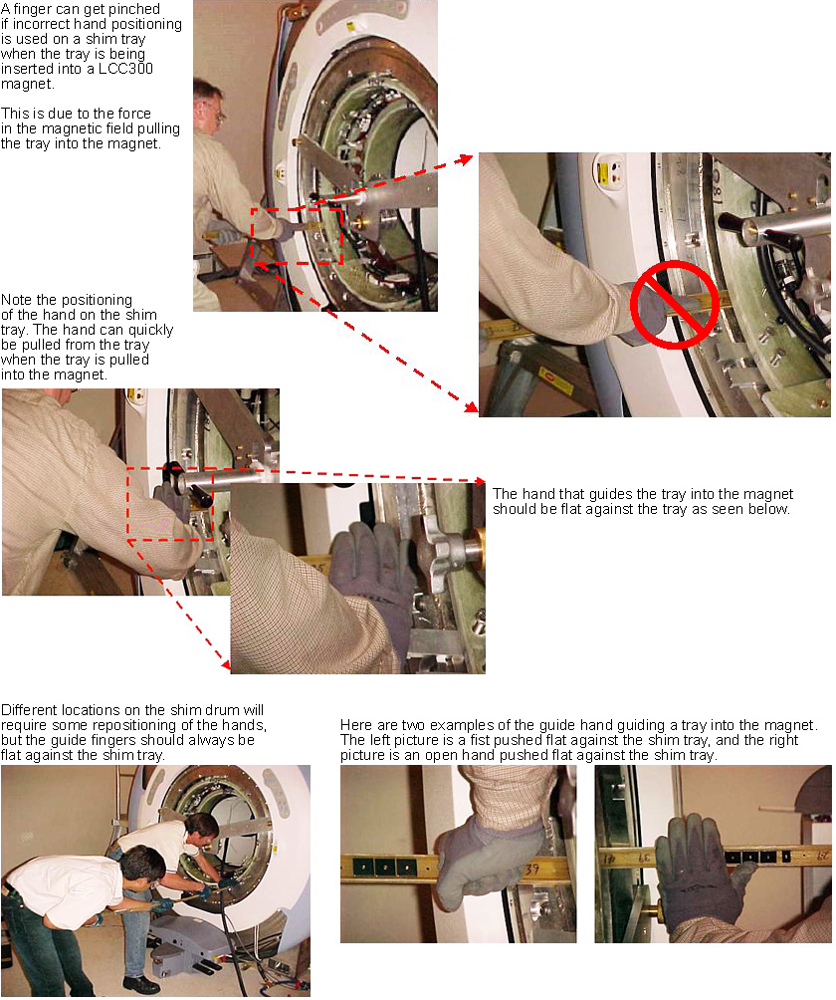
Pull the shim tray puller's push handle back to allow the locking prongs on the tray to re-engage.
Turn the shim tray puller's wheel until the puller is disengaged from the tray.
Do not attempt to superconductive shim a 3.0T magnet without reading, understanding and following these safety alerts and notices:
| ||||
| Potential Fatal Injury! | ||||
| Make sure to review and fully understand all superconducting magnet portions of MR Magnet - Safety Requirements before starting to S/C shim the magnet. |
| ||||
| Potential Fatal Injury! | ||||
| Make sure to fully comply with all required items for the Shimming procedure in the 'Magnet & Cryogen Service Safety Requirements' subsection of MR Magnet - Safety Requirements before and while performing S/C shimming the magnet. |
| ||||
| Potential Fatal Injury! | ||||
| Have all “Work Assistants” or “Work Observers” comply with the 'Buddy System Requirements & Certification' subsection of MR Magnet - Safety Requirements before starting to S/C shim the magnet. |
| ||||
| Asphyxiation Hazard! | ||||
| The Shimming Procedure generates odorless, colorless helium gas that displaces oxygen in the air. | ||||
| Make sure magnet room vent exhaust fan is on before starting to S/C shim the magnet. |
| ||||
| Potential Magnet Quench | ||||
| A closed Nupro Valve during Shim Lead engagement can cause a magnet quench. | ||||
| Make sure the Nupro Valve is fully open and the valve is frosted before slowly engaging the Shim Lead. Do NOT remove the Shim Lead's Orifice Cap that controls helium gas flow. Always engage/disengage the Shim Lead in conformance with Shim Lead Engagement and Disengagement. |
| ||||
Make sure that the shim power supply is calibrated in conformance
with the vendor's manual, and the shim heater currents are set as
shown below before use.
| ||||
| ||||
| The “Recommended Total Current” and polarity values
calculated by the shim program must be entered into the S/C Correction
Coils before performing subsequent field mapping. The coil groups are:
Each coil group is connected to one heater circuit on the shim power supply. Therefore, if the only current change was in the Axial 2 Coil, turning the Axial Switch Heater on would dump the currents in Axial Coils (AX1 to AX6) and the appropriate currents for each Axial Coil would need entering. | ||||
| ||||
Before turning on the shim coil power supply and applying shim
currents, make sure the following conditions exist to prevent irreparable
damage to the vapor-cooled Shim Leads:
| ||||
| ||||
| Do NOT move articles or equipment in the Magnet Room while adjusting shim currents. | ||||
Make sure the Shim Lead is engaged (Shim Lead Engagement and Disengagement), the Shim Lead Nupro Vent Valve is open, vapor is escaping from the Shim Lead and the lead is frosted, then turn on the power supply.
Repeat the following steps: Step 3.athrough Step 3.h to input shim currents for each shim group in sequence: T1, then T2 and Axial. (See Table 8.)
Set the Shim Group Select Switch to the appropriate group: T1, T2 or Axial. (See Illustration 50.)
Table 8: S/C Shim Groups
| Transverse 1 Shim Group | Transverse 2 Shim Group | Axial Shim Group | |
|---|---|---|---|
| Course/Fine Adjust Potentiometer & Polarity Light/Switch | “Shim Group Select” Switch Setting | ||
| Middle | Bottom | Top | |
| Coil (Circuit) | Coil (Circuit) | Coil (Circuit) | |
| 1 | T1-1 (Z X2Y2) | T2-1 (ZXY) | AX1 (Z1) |
| 2 | T1-2 (X) | T2-2 (Y) | AX2 (Z2) |
| 3 | T1-3 (Z2X) | T2-3 (Z2Y) | AX3 (Z3) |
| 4 | T1-4 (ZX) | T2-4 (ZY) | AX4 (Z4) |
| 5 | T1-5 (X2Y2) | T2-5 (XY) | AX5* (Z5)* |
| 6 | T1-6 (X3)* | T2-6 (Y3)* | AX6* (Z6)* |
| * Not applicable to W0 Series LCC300 magnets. | |||
Illustration 50: Shim Power Supply Controls (Front Panel)
| NOTE: | The present current/polarity, referred to in the following
steps, is the current/polarity that presently exists in each shim
coil. The present currents/polarities are those ShimTool calculated/reported
(in the Previous column under Active
Shim Currents shown in Illustration 51 or Illustration 52) in its previous iteration, and then loaded into
the shim coils and recorded in SC Shimming Data in the New column. Illustration 51 and Illustration 52 show the C: drive directory paths used by Windows 2000 ShimTool installations. Windows XP installations use D: drive directory paths instead. |
Illustration 51: Example ShimTool Printed Report, W Series LCC300, Pages 1 and 2
Illustration 52: Example ShimTool Printed Report, WB Series LCC300, Pages 1 and 2
Match the Shim Power Supply current and polarity of each channel (coil) in each group to the present current and polarity in the selected shim coil group. (See Illustration 50.)
Set the Polarity Toggle Switches (Up = normal/positive polarity and Down = reversed/negative polarity) as required for to match the present polarity for the each coil in the group.
Set the Course/Fine Current Adjust Potentiometers on the power supply to match the present current level for the each coil in the group.
| NOTE: | The polarity relays will not change polarity if there is any current flowing through their respective channels. The current must be reduced to zero before the relays will change to the position indicated by the external switches on the power supply. |
| ||||
| Magnet damage is possible if heater currents are not set correctly. | ||||
| ||||
| When the Switch Heaters are turned on, any existing currents in the Shim Coils will be discharged into the power supply. To prevent dumping excessive currents through the Shim Leads, match the existing shim currents at the power supply with those in the magnet before turning on the Switch Heaters. The current then can be adjusted to the required new levels after the Switch Heaters are activated. | ||||
Verify that all shim power supply currents/polarities match the currents/polarities in the selected shim coil group.
Turn on the selected group's Switch Heater (Transverse 1, Transverse 2 or Axial), and wait 30 seconds for the switches to go resistive.
| NOTE: | If there is a polarity change from the present to the new current, set the current to zero before changing the polarity switch. |
Set the new “total” currents and polarities for the shim coil group using ShimTool's latest “Active Shim Currents” values (i.e., the currents listed in the column labelled New on the Active Shim Currents page of the ShimTool report shown in Illustration 51).
| ||||
| Since the LCC300 magnet correction coils have a greater time constant (inductance : resistance ratio) than those of a 1.5T magnet, a longer settling time is required for the shim currents. It is important that the shim current settling time is in conformance with Table 9 to prevent subsequent current drift after settling. | ||||
Allow the shim currents to settle for the time shown in Table 9.
Table 9: Settling Times for New Shim Currents After Re-establishing ATR
| Shim Coil Group | Settling Time |
|---|---|
| T1 | 10 minutes |
| T2 | |
| Axial* | 20 minutes* |
| * Axial times represent minimum times. Axial coupling may require longer wait times to meet the magnetic field stabilization requirements stated in Step 5 below. | |
Verify the new currents, then turn off the heater group and wait five (5) minutes.
After waiting five minutes, gradually turn the power supply Current Adjust Potentiometers down to zero.
| NOTE: | If repeated iterations of the shim program call for the
same current increment in a shim coil, indicating the Shim Switch
not going resistive, then one of the two following actions may help
drive the Shim Switch resistive:
Adjust slightly, as required. (1 mA high is better than 1 mA low.) |
| NOTE: | Failure to accurately set the power supply currents and polarity can greatly increase the number of plotting iterations (i.e., time to shim the magnet). |
Make sure the field camera is in the 0° position.
For axial currents only, monitor field drift until it stabilizes (i.e., <2 Hz change in total field over a two-minute period):
| NOTE: | In some cases, the frequency could vary as much as 100 Hz. Shutting off the Coldhead Compressor during acquisition/mapping of shim data may help reduce the frequency change. |
Click the [Continuously Monitor Field] button (second button from right) from ShimTool's main screen. (See the following illustration.)
Illustration 53: Continuously Monitor Field Button on ShimTool Main Screen
Select Probe 22.
Select [Start] on the screen that displays to begin measuring field strength and drift.
Record the starting frequency for use in Step 5.e.
Wait two minutes, then click [Stop] and record the change between the starting and present frequencies.
Once the magnetic field is stable, turn off the last Switch Heater that was turned on, and allow the Heater to cool for five (5) minutes.
Slowly turn all the Course/Fine Current Adjust potentiometers on the shim power supply back down to zero (0) amps (full CCW).
| ||||
| Potential Quench Hazard | ||||
| The axial shim currents may quench if the Shim Switch is in the Axial position when the Shim Power Supply is turned off. | ||||
| Make sure the Shim Power Supply's Shim Switch is in the Transverse 1 or Transverse 2 position before turning it off. |
When S/C shimming is complete:
Turn off the power supply.
| ||||
| Electrical Shock Hazard | ||||
| Contact with connectors leading to an energized power supply can cause electrical shock. | ||||
| Follow lockout/tagout procedures while making electrical connections to the shim power supply. |
Disconnect and LOTO input power to the Shim Coil Power Supply. Verify that no voltage is present by using a DVM or equivalent measuring device.
Disconnect all leads between the magnet and the Shim Coil Power Supply (P2, P2-W, Heater Cable).
Close the Shim Lead Nupro Vent Valve.
| ||||
| Make sure the cap is replaced and does NOT leak, which could result in gaseous helium loss or frosting. | ||||
Retract the Shim Lead in conformance with Shim Lead Engagement and Disengagement, tighten the brass cap and check for leaks.
Make sure the shimming results are available to other personnel for future shimming:
Copy all .map, .cur and.shm files generated during shimming to a CD.
Copy the .map, .cur and.shm files to the console.
Record the directory path of files copied to the console in the Shim Process Log of theShimming Process Data.
Leave the CD on site with this Magnet and Cryogens Subsystem manual.
Put the magnet back in normal condition in conformance with Preparations for Field Measurement and the appropriate Service Methods documentation.
| NOTE: | For Field Adjustments after Shimming, refer to Field Adjustment after
Shimming. For Magnetic Field Stability Checks, refer to Field Stability Check. |